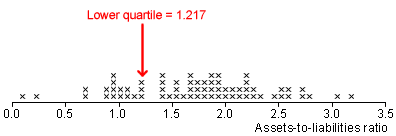
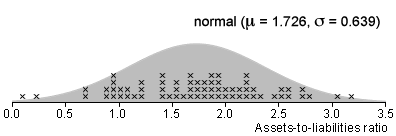

Confidence intervals for other parameters
Statistical theory can provide formulae for the standard errors of most commonly used parameter estimates. These can be used to form approximate 95% confidence intervals in a similar way to those for means and proportions,
estimate - 2 s.e. to estimate + 2 s.e.
However the standard errors for some estimators cannot be so easily derived (or cannot be evaluated by readily available software).
Assets-to-liabilities ratios
Researchers in Greece found the assets-to-liabilities ratios of a sample of 68 healthy companies. Low assets-to-liabilities ratios are usually regarded as undesirable for a company.

We would like to form a 95% confidence interval to answer the following question.
A quarter of healthy companies have an assets-to-liabilities ratio under what value?
There is no easy formula for a confidence interval for the lower quartile, so a different approach is needed.
Confidence interval from simulation
95% confidence intervals can be found directly from the error distribution.
From the value e*,
Prob ( -e* < error < e* ) = 0.95
and therefore
estimate - e* to estimate + e*
is a 95% confidence interval for the parameter.
If the error distribution (or standard error) cannot be found from statistical theory, a simulation may provide an approximate error distribution.
The method is illustrated below.
Simulated error distribution for lower quartile
We will conduct a simulation to find the error distribution for the lower quartile of the assets-to-liabilities distribution. A normal population seems a reasonable model and the best-fitting normal distribution is shown below.

We now forget about our data and perform a simulation based on samples from this best-fitting normal population. The lower quartile of this population is 1.295, so this is the 'target' parameter that we will be trying to estimate from our simulated samples.
Click Accumulate and take 100 or more samples to build up the error distribution for estimation of the population lower quartile from a sample of 68 healthy companies. (Hold down the Take sample button to repeatedly take samples.)
When the error distribution contains 100 or more crosses, click the checkbox Show 95% bounds for error. This displays the interval of errors that occurred in 95% of samples.
You should have observed that 95% of estimation errors for this type of estimator were within about ±0.2.
(The exact value varies with the simulation.)
95% confidence interval for upper quartile
From the simulation, we are 95% confident that the error from this type of estimator will be no more than 0.2.
We can now apply this error bound to our actual data. Since the lower quartile from our actual assets-to-liabilities data was 1.217,
We are 95% confidence that the population lower quartile is between (1.217 - 0.2) = 1.02 and (1.217 + 0.2) = 1.42